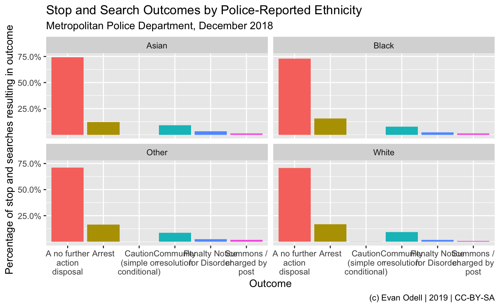

../docs/vignettes/introduction.Rmd
introduction.RmdThe ukpolice package downloads data from the UK Police public data API, the full docs of which are available at https://data.police.uk/docs/.
The API uses a ‘leaky bucket’ rate limiter, which allows for 15 requests per second with a burst of 30. This allows for 15 requests each second, but up to 30 in a single second at one go. The API does not require authentication.
Data is available on police forces, crimes, policing areas and stop-and-search. All functions begin with ukc_.
The example below queries stop and searches by the Metropolitan Police in December 2018, and plots them by police-reported ethnic group.
library(ukpolice)
library(ggplot2)
library(dplyr)
#>
#> Attaching package: 'dplyr'
#> The following objects are masked from 'package:stats':
#>
#> filter, lag
#> The following objects are masked from 'package:base':
#>
#> intersect, setdiff, setequal, union
london_ss <- ukc_stop_search_force("metropolitan", date = "2018-12")
london_ss2 <- london_ss %>%
filter(!is.na(officer_defined_ethnicity)) %>%
group_by(officer_defined_ethnicity, outcome) %>%
summarise(n = n()) %>%
mutate(perc = n/sum(n))
p1 <- ggplot(london_ss2, aes(x = outcome, y = perc,
group = outcome, fill = outcome)) +
geom_col(position = "dodge") +
scale_y_continuous(labels = scales::percent,
breaks = seq(0.25, 0.8, by = 0.25)) +
scale_x_discrete(labels = scales::wrap_format(15)) +
theme(legend.position = "none") +
labs(x = "Outcome",
y = "Percentage of stop and searches resulting in outcome",
title = "Stop and Search Outcomes by Police-Reported Ethnicity",
subtitle = "Metropolitan Police Department, December 2018",
caption = "(c) Evan Odell | 2019 | CC-BY-SA") +
facet_wrap(~officer_defined_ethnicity)
p1
We can also map crimes tied to particular locations. In the map below, you can see all crimes reported in Cambridge in September 2018, with markers indicating the approximate location.
library(leaflet)
library(htmltools)
library(ukpolice)
crime_poly <- ukc_street_crime(
lat = c(52.263, 52.273073, 52.134836, 52.135468),
lng = c(0.01854, 0.327187, 0.314484, -0.011329),
date = "2018-09"
)
crime_poly$location$longitude <- as.numeric(crime_poly$location$longitude)
crime_poly$location$latitude <- as.numeric(crime_poly$location$latitude)
labels <- paste0(
"<strong>Category:</strong> ", crime_poly$category,"</br>",
"<strong>Outcome:</strong> ", crime_poly$outcome_status$category, "</br>",
"<strong>Street Description:</strong> ", crime_poly$location$street$name
) %>% lapply(htmltools::HTML)
map <- leaflet(options=leafletOptions(
maxBounds = list(list(0.48,-0.05), list(52.3,52.1)), minZoom = 4)) %>%
addTiles() %>%
addCircleMarkers(lng = crime_poly$location$longitude,
lat = crime_poly$location$latitude,
popup = labels,
clusterOptions = markerClusterOptions())
map